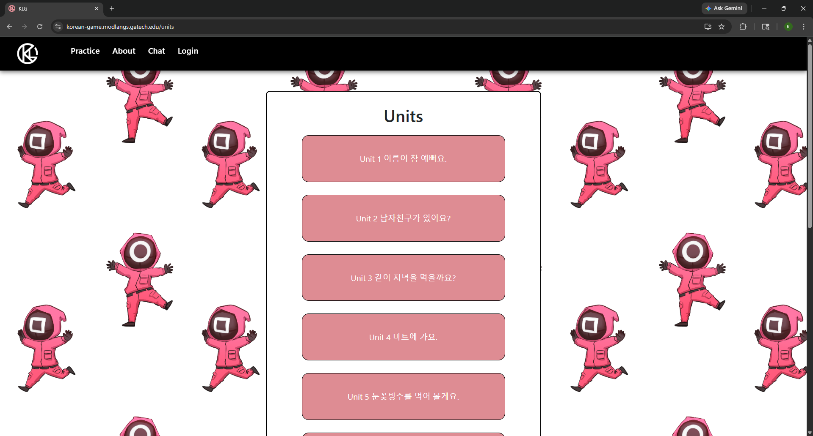
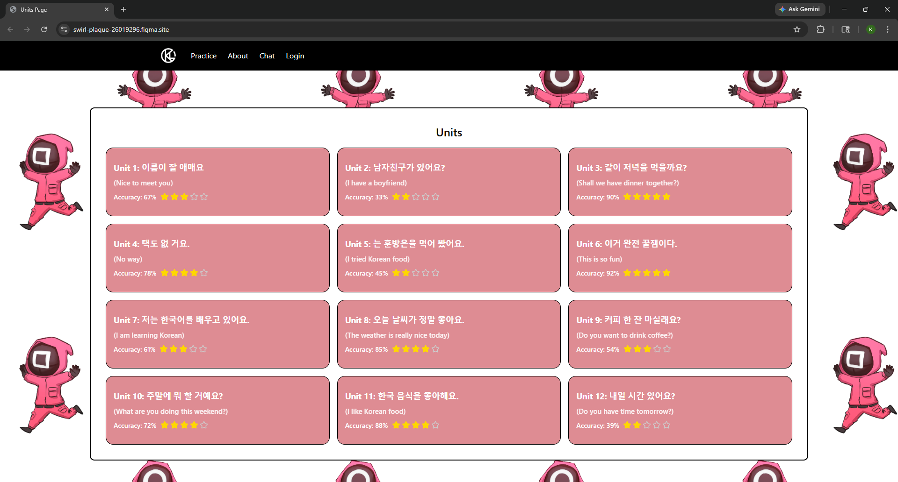
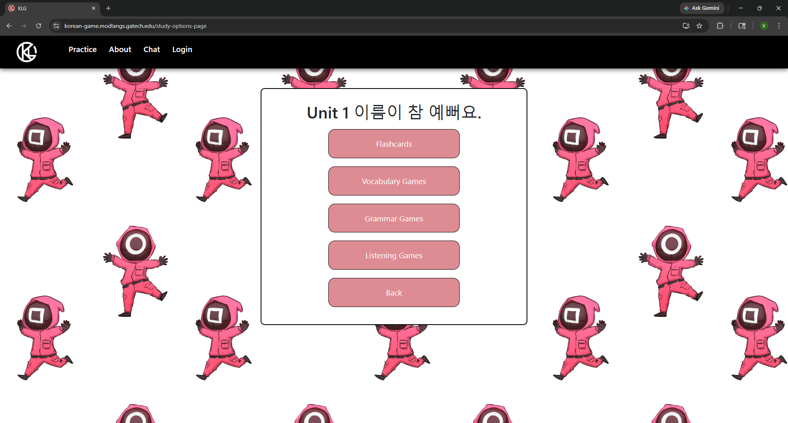
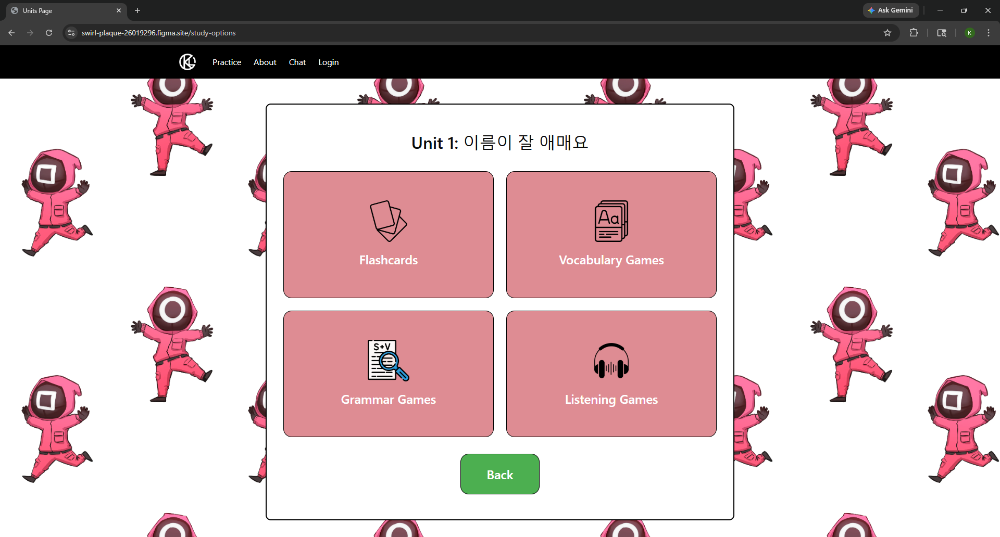
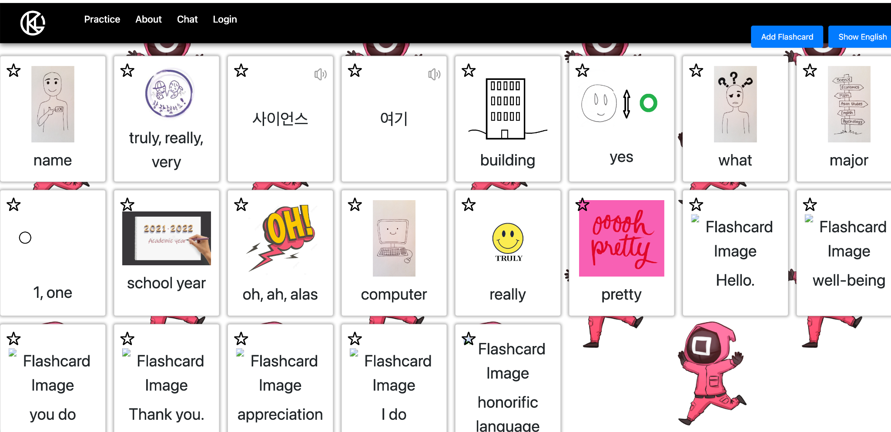
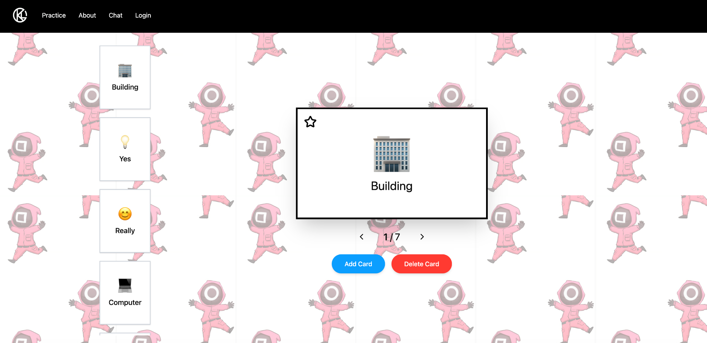
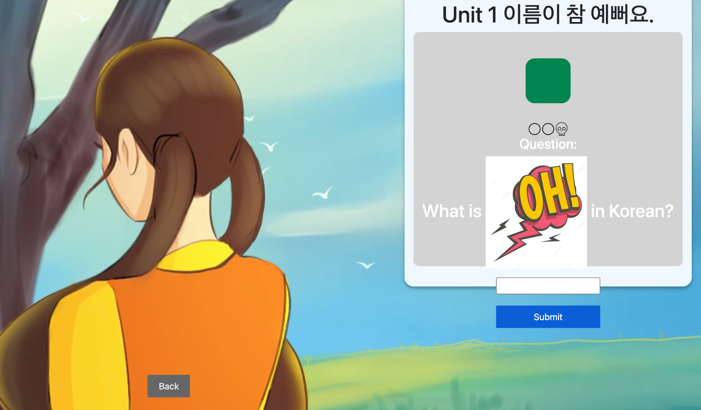
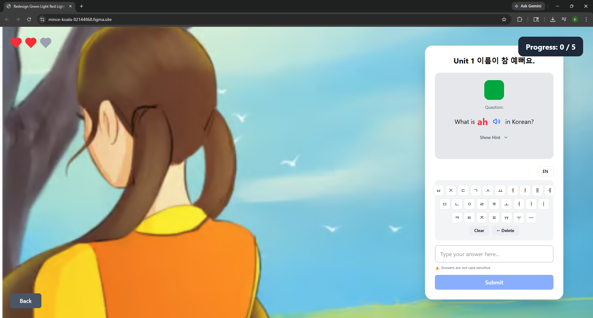
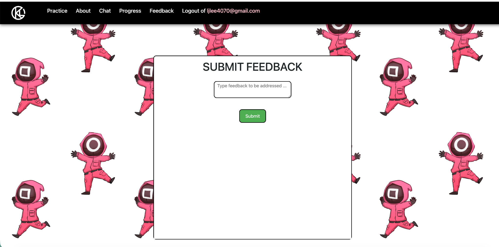
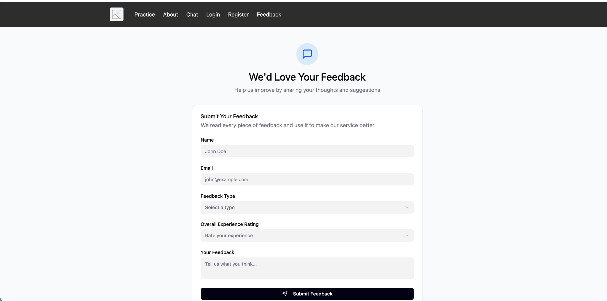

Recommendations
To address the navigation and discoverability issues, we recommend overhauling the Units page to feature a grid layout. This redesign minimizes scrolling, making it significantly more desktop-friendly. By displaying multiple units simultaneously in a structured grid, users can view their curriculum at a glance without extensive vertical navigation. We also strongly recommend integrating English translations directly into the unit titles and navigation elements. This drastically reduces the cognitive load for beginners, who are our target audience, improving accessibility. Additionally, adding accuracy metrics (star ratings and percentages) directly to the unit cards allows users to evaluate their mastery quickly without navigating to a separate progress page. At the following link you will find our fully interactive prototype for the Units page: https://swirl-plaque-26019296.figma.site


The Study Options page should be redesigned to include clear, distinct icons for Flashcards, Vocabulary Games, Grammar Games, and Listening Games. This visual differentiation helps users quickly scan and select their desired activity. At the following link you will find our fully interactive prototype for the Study Options page: https://swirl-plaque-26019296.figma.site/study-options


The flashcard system should also be updated to a Quizlet-style scrollable design. The original design forced users to process a massive wall of text and icons simultaneously. By isolating a single flashcard in the center of the screen, the redesign drastically improves visual efficiency. Users no longer have to spend time visually scanning columns and rows to find their place or locate a specific term, instead, they are guided through a focused, linear study workflow. This structured pacing allows for faster processing of individual vocabulary terms. At the following link you will find our fully interactive prototype for the Study Options page: https://search-dun-24205027.figma.site/


For the games requiring Korean input, we recommend implementing a virtual Korean keyboard. A common frustration we observed among users was clicking on games not knowing they required Korean input, and not being able to play them as result. Rather than making users navigate to system settings to add a Korean keyboard, we can integrate a virtual keyboard directly into the game interface. This allows users to seamlessly switch between English and Korean input without leaving the game environment, significantly reducing friction and improving accessibility. At the following link you will find our fully interactive prototype for the Red Light Green Light game page: https://mince-koala-82144868.figma.site/


Finally, we recommend replacing the open-ended feedback box with a structured submission form. The original design placed the burden of categorization on the user, requiring them to explain the context, type, and severity of their issue in a single unstructured box. The new redesigned form utilizes a Recognition over Recall strategy. By providing a "Feedback Type" dropdown menu, users can quickly select the relevant category (e.g., Bug Report, Feature Suggestion, General Inquiry) with a single click. This structured approach reduces the time a user spends thinking about how to phrase their issue, thereby increasing the efficiency of the submission process. At the following link you will find our fully interactive prototype for the Feedback page: https://stable-fawn-89596407.figma.site/


Conclusion
The design process for the KLG redesign served as a critical reminder that even the most engaging educational content can be undermined by fundamental usability barriers. By moving through iterative sprints, from initial heuristic evaluation to high-fidelity prototyping, the platform has been transformed from a visually cluttered and technically rigid environment into a user-centric learning tool. The final value of this project lies in its ability to lower the barrier to entry for beginner language learners. By resolving the substantial "input friction" and improving how imformation is presented through grid layouts and Quizlet-style interfaces, the redesign ensures that the user’s cognitive energy is spent on mastering Korean vocabulary rather than struggling with the interface.
The team learned that "minor" technical constraints, such as case-sensitive text inputs or the lack of a native Korean keyboard, manifest as major emotional stressors for users, leading to high abandonment rates. This project underscores that empathetic design requires looking past the intended "happy path" to solve for the specific moments of frustration that occur during real-world use.
Engineering Hand-off: For seamless implementation of this design, the engineering team should prioritize updating the input validation logic on the backend to be case-insensitive, and integrate a virtual Korean keyboard API for the games. The accuracy badges (star ratings and percentages) on the Units page must also pull from live user data, not static placeholders. The engineering team should confirm the existing Progress page endpoint is accessible and returns per-unit accuracy before building the card component. Lastly, the engineering team should ensure that the feedback endpoint is properly configured to handle the new structured feedback submissions.